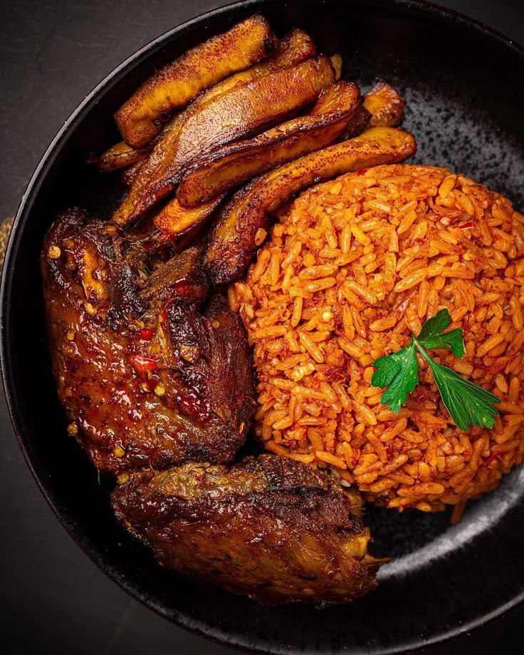

THE RECIPE COLLECTION / West African Cuisine
Jollof Rice
A popular West African rice dish cooked in a rich tomato and pepper sauce with aromatic spices.

Description
Jollof Rice is a popular West African dish made with rice, tomatoes, onions, and a variety of spices. It is often served at parties and celebrations and is known for its vibrant red colour and rich flavour.
Ingredients
- 2 cups long-grain parboiled rice
- 1/4 cup vegetable oil
- 1 large onion, chopped
- 1 red bell pepper, chopped
- 1 can (14 oz) diced tomatoes
- 1/4 cup tomato paste
- 2 cups chicken broth
- 3 chicken thighs, cut into small chunks
- 1 teaspoon thyme
- 1 teaspoon curry powder
- 1 bay leaf
- Salt and pepper to taste
Preparation Steps
- Heat the vegetable oil in a large pot over medium heat.
- Add the chopped onions and bell pepper. Cook until softened.
- Add the diced tomatoes and tomato paste, then cook for 5 minutes.
- Pour in the chicken broth and add the thyme, curry powder, bay leaf, salt, and pepper.
- Bring the mixture to a boil, then reduce the heat and simmer for 20 minutes.
- Add the chicken pieces and cook until they are no longer pink inside.
- Add the rice and stir to combine it with the sauce.
- Cover the pot and simmer for about 20 minutes, or until the rice is cooked through.